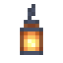

智能体
 合成
合成


智能体是一副运行程序的躯壳。走路、搬运、收割、挖掘和放置方块都由它自己完成；在学习胜过规则的地方，由它槽里的模型做决定，格式与该模型的测试完全相同，智能体照模型的回答去做。你能在它那灯笼般的脑袋里看到模型，思考时转得更快。
家与模型
放下智能体的地方就是它的家，它的工作都在家周围进行。界面旁那个房子形状的「设为家」会把它所站的位置设为新家。
界面旁边的面板里有它的两个模型槽和它的升级。模型槽接受一个装有权重不超过 160 KB 的模型的检查点，或者一张调谐到某台模型服务器的中继卡，后者可用任意大小的模型：见模型服务。这个模型把你下的指令写成程序，并负责储物、搬运、建造和复制中的决定。过滤器槽接受一个通过分拣的检查点，用来判断每样东西属于哪一类。它的界面会说明还缺什么。
程序
「程序」页存放没有别的吩咐时它要做的事：各步之间用逗号隔开，输入时即时检查。
take bread, come, give breaduntil full (pickup)repeat (mine 4 stone, put)if ripe (harvest) else (wait 10)
「运行」启动程序，「停止」停止程序。一直持续下去的程序，即不带次数的 repeat，是它的日常工作；其他程序只运行一次，然后它就休息。「工作」页上的按钮可设置现成的程序：「种田」是 repeat (farm)，「分拣」是 repeat (sort)，依此类推，「休息」则清空程序。
「停止」旁的「指令板」会摆出程序的所有组件，供你点选拼接而不必输入；指向每个组件时会显示它的作用。组件接在末尾，同时附上显然紧随其后的部分：开启结构的 (，place 所需的标记。要指名某样东西，拿起它点击程序，或「工作」页上的指令框即可。
下面是智能体常用的步骤；程序能说的一切，不论在智能体还是端口上，都在程序里：变量、列表、你自己的步骤、事件、区域、过滤，以及程序能读到的世界。
come、home、go 3走到第三个标记、stay、followtake 5 bread从家周围的箱子和木桶，或那里存储终端所在的网络中拿取，put放回全部或put wheat放回小麦，give bread交给你，fetch bread即拿取、过来再交给你craft 8 torch如果手里有所需的东西，就当场做出来；做不了的，走到家周围一个其网络能做这样东西的终端，提出请求，等它做好；supply去找那个网络上的任务缺的东西，从箱子和木桶里取或者挖来，再送进网络，所以repeat (supply, wait 10)能让网络的任务一直做下去pickup捡起周围的东西、harvest、plant wheat seeds、till耕水边的草地、mine 4 stone（需要镐的方块要用它携带的镐；埋在地下的、以及勘测仪找到的，它会一路挖过去；mine caches去取旧世界留在遗藏里的东西；彼此附近挖矿的智能体会挑不同的方块）、place oak planks 2放在第二个标记上方wait 10等待秒数、say hellofarm、store、sort、haul、build、copy或move：执行一轮例行工作
结构：repeat (…)、repeat 3 (…)、if … (…) else (…)、until … (…) 和 wait until …。条件：have 3 bread，stocked bread 即家周围的储藏或网络中有面包，ripe、full、night、near（你在 8 格以内）、powered 2（第二个标记有红石信号），需要时可在前面加 not。
追踪
「追踪」页按时间顺序（最新的在最后）显示它做了什么、检查了什么、决定了什么，以及每一步的结果：储物和分拣会记下放好的每一组物品及其位置。失败的步骤会说明原因，程序继续执行下一步。智能体在路上卡住时，过一阵就会放弃；连续卡住三次，它会直接跳回家。旁边的调试器能把程序停在某一步，一步一步地运行，并显示它存着什么。
升级
升级放在界面旁边的面板里。到头时，它每刻都能行动，能带 48 格东西。有升力升级和能量它就能飞，能量用完就下来走路。
例行工作
- farm：走遍家周围 7 格内的耕地，收割成熟的，补种空着的，再把收成送到家里的箱子，并留下一些种子。这是规则，不用问模型。
- store：把家周围木桶里的东西清到 8 格内的箱子中，箱子按由近到远编号 0 到 9。从未见过的种类放进最空的箱子。对于见过的种类，它向模型展示八种东西各放在哪里，并问这一种该放进哪个箱子。
- sort：把家周围木桶里的东西按种类清到贴有标签的箱子中：Food、Plants、Wood、Stone、Ores 或 Tools。在铁砧中给箱子命名即可贴标签，也可以在箱子上挂一块告示牌。它只凭每样东西的名称向过滤器询问种类，所以没见过的东西也能分拣。过滤器判为其他、或把握低于 60% 的东西，放进标为 Other 的箱子，没有的话就放进无标签的箱子。
- haul：沿交给它的六个路标往外走，在最后一个路标处的箱子或木桶装货，然后回家。回程时由模型倒序说出路标，模型说去哪儿，它就走到哪儿。
- build、copy 和 move：按模型读出的结果，沿一段直线续上图案、复制一座建筑，或把它连同里面的东西搬走：见建筑师。
勘测杆
合成


对方块使用勘测杆可按顺序标记它们，最多八个；对已标记的方块再次使用可取消标记，潜行时对空气使用则全部清除。对智能体使用勘测杆，把标记交给它：搬运用的路标、建筑的对角和副本的位置、要续建的一段直线的两端，或者 go 和 place 用的位置。
程序卡
无序合成

程序卡在智能体之间传递程序。对智能体使用空白卡可复制它的程序，使用写好的卡则把程序交给它；潜行时使用写好的卡，则改为复制到卡上。在智能体的界面中，拿着写好的卡点击程序可载入卡上的内容，拿着空白卡点击则把程序写到卡上；按住 Shift 点击也能写到已写好的卡上。
指令
以智能体的名字开头发一条聊天消息，就能给它下指令：Pip, bring me some bread。它能听到 24 格内的你；若你手持调谐到某台模型服务器的终端，那么只要你和它都在该服务器中继器的覆盖范围内，相隔多远都能听到。你也可以在它界面的「工作」页上输入指令，再点「下达」。
它的模型把指令写成程序，用的是程序里的全部写法：move 16 iron ingots from mark 1 to mark 2、dig out everything between the marks、put all the logs on the network、go to every mark and say hello、make a step sweep that harvests and puts away。一个普通的步骤或某项工作，如果模型有把握，它会立即执行。其他情况它会复述一遍，并在聊天中或其界面的「工作」页上提供 [执行] 和 [取消] 供你点击，只有你同意后才运行：指向它可以看到分行列出的各步。通过程序测试的模型已赢得信任，写出的程序无论多长都会立即运行。指令优先于它的程序，执行完再回到程序。如果模型写出的根本不是程序，它会一头雾水；从没练过指令的模型大多会一头雾水。如果根本没有模型，已经写成程序的指令，比如 dig at front，会照原样执行。
灯笼铜锭红石粉智能体

 紫水晶碎片木棍勘测杆纸程序卡
紫水晶碎片木棍勘测杆纸程序卡